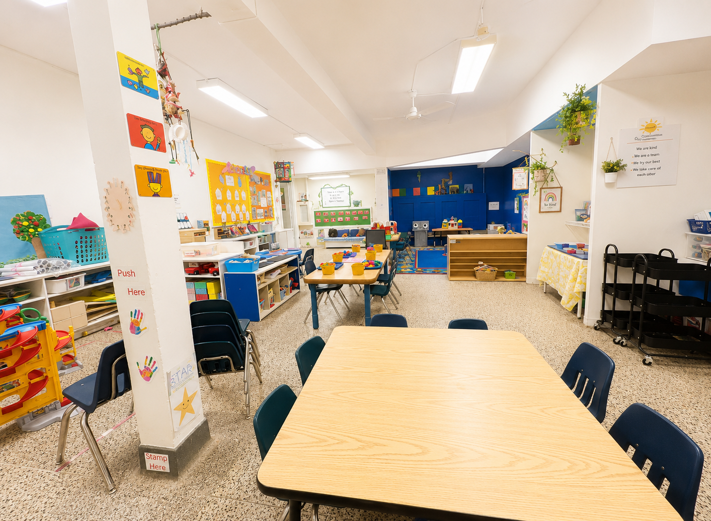

2.5–4 Years
Dinos
An energetic preschool community where children investigate, communicate, solve problems and learn through play.
Welcome to Dinos
Big questions and exciting discoveries
The Dinos are encouraged to follow their curiosity, express their ideas and take an active role in their learning. Educators support children as they experiment, build, create and work together.
The Dino room has 16 spaces for children aged 2 1/2 to 4 years. Our team of Registered Early Childhood Educators and Early Childhood Assistants provides a stimulating, play-based environment where children are encouraged to ask questions, solve problems, and discover the world around them. With a ratio of 1 educator for every 8 children, educators build strong relationships while supporting each child's unique interests, strengths, and developmental needs. Guided by Ontario's How Does Learning Happen? framework and emergent curriculum, children engage in hands-on experiences that promote creativity, critical thinking, collaboration, and independence. Through science exploration, dramatic play, art, literacy, outdoor adventures, and meaningful group projects, children develop confidence, resilience, and the skills they need for a successful transition to kindergarten.
Children may experience:
- Building and construction
- Science, nature and sensory investigations
- Creative art and design
- Early math and literacy experiences
- Dramatic and cooperative play
- Outdoor movement and exploration
Our Approach
Confident thinkers and problem-solvers
Children are supported in making decisions, working through challenges, developing friendships and recognizing that their thoughts and ideas are valuable.
Interested in the Dinos?
Contact us to learn more about our preschool programs.
Join Our Waitlist